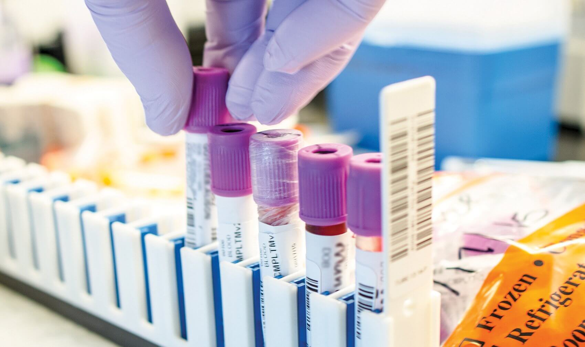
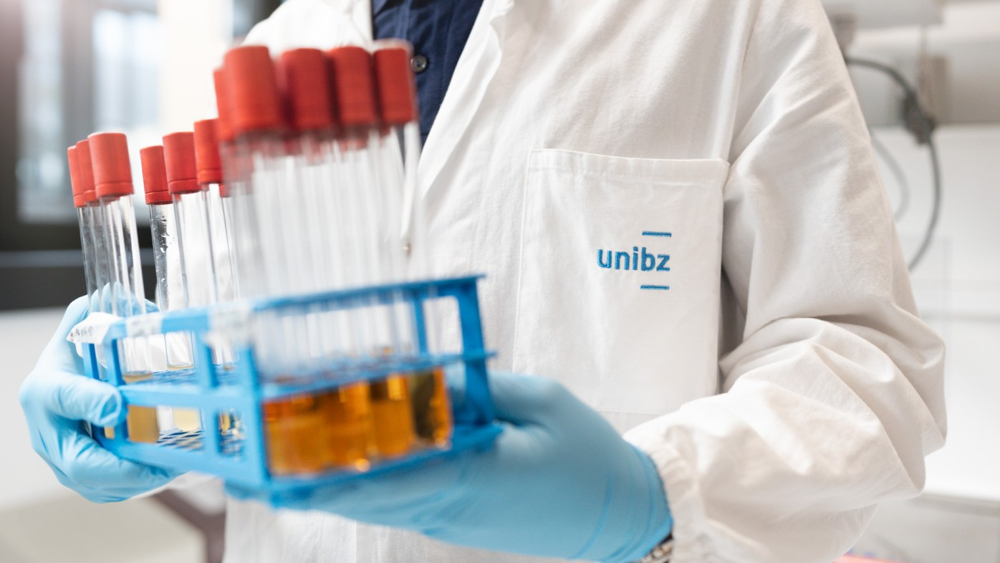
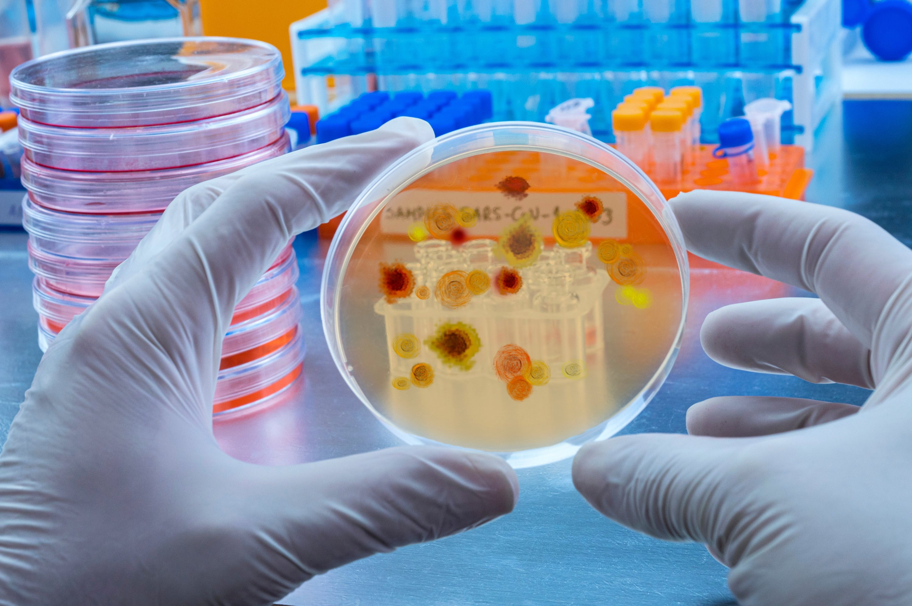
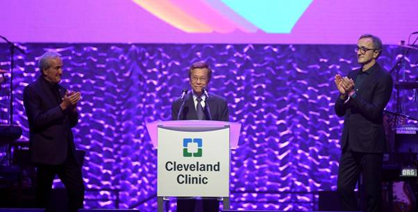

面向实际研发门户的高保真入口体验
围绕工程细胞主题库的核心内容，统一呈现实验场景、数据能力和业务分析入口，兼顾展示质感与后续开发落地。
覆盖微生物细胞工厂构建全生命周期，围绕基因型-表型关联、多组学、发酵过程、培养营养四大核心数据库，构建面向实际研发门户的高质量展示与分析入口。
围绕工程细胞主题库的核心内容，统一呈现实验场景、数据能力和业务分析入口，兼顾展示质感与后续开发落地。

围绕微生物细胞工厂构建全生命周期，建设覆盖四大核心数据集的标准化平台，以全基因组关联挖掘与代谢网络模型为技术驱动。
通过全基因组关联分析（GWAS）挖掘未知关联基因及其位点，打通从测序数据到菌株改造的知识转化链路。
整合基因组、转录组、蛋白组、代谢组等多维数据，构建代谢网络模型，支撑功能基因筛选与系统解读。
基于全维度发酵过程数据采集与分析，结合代谢网络优化与人工神经网络模型，提升发酵效率与产物得率。
系统化沉淀培养营养数据，覆盖多种工业底盘菌株培养条件，支撑培养基配方优化与工艺放大。
通过高质量数据治理与深度清洗，保障数据可追溯、可复用，降低重复试错成本，提升科研资源利用效率。
数据标准体系建立，连接多源数据入库、三级质量控制、四大数据库构建与数据应用平台服务。
GPA 采集标准化、工程细胞模型标准化、小中试条件数字化标准化以及菌株保护加密标准化。
整合工业底盘菌实验数据、多组学数据、发酵全维度数据与外部公开数据。
围绕 GPA、组学、发酵三类数据开展采集规范性、一致性与生物学合理性三级校验。
形成基因型-表型关联、多组学、发酵过程、培养营养四大核心数据库。
提供知识网络图谱、参数预测模型与基因型组合优化预测等门户能力。
四大核心数据集，覆盖基因型-表型关联、多组学、发酵过程、培养营养全维度内容。
自有数据 40 万条，公开数据 10 万条。基于 GWAS 全基因组关联分析，挖掘工业底盘菌株的高产关联基因靶点。
自有数据 16 万条，公开数据 12 万条，论文及其他数据 2 万条，覆盖基因组、转录组、蛋白组、代谢组等多维数据。

自有数据 8 万条，公开数据 12 万条，覆盖温度、pH、溶氧、搅拌转速、生物量、代谢物浓度等全维度过程参数。

自有数据 14 万条，公开数据 16 万条，论文及其他 1,000 条，系统化沉淀培养营养配方，支撑培养基优化与工艺放大。
数据体量达到 TB 级别，年度新增 300-500 条记录，三级质控体系保障数据质量与可复用性。
围绕 GPA、组学、发酵三类数据分别实施三级校验。
第一级：采集规范性，确保数据采集过程符合标准化流程。
第二级：一致性校验，通过多元数据交叉验证排除异常值。
第三级：生物学合理性，由领域专家审核，确保数据符合生物学规律。
以标准化高质量数据集赋能合成生物学研究，深度清洗保障数据可追溯、可复用。
覆盖基因型-表型分析、组学数据分析、发酵过程分析、全流程数据分析四大应用场景。
挖掘未知关联基因及其位点，加速从测序数据到菌株改造的知识转化。基于自有 40 万+ 基因型-表型关联数据，结合统计遗传学方法进行显著性关联挖掘。
整合 GPA 数据进行多组学关联解读，构建基因组规模代谢网络模型（GSMM），实现从基因型到代谢表型的系统预测与功能基因筛选。
基于发酵过程全维度数据，结合代谢网络模型与人工神经网络（ANN），预测最佳发酵条件组合，提升发酵效率与产物得率。
整合四大数据库，构建知识网络图谱，实现基因型组合优化预测，为工程菌株理性设计提供全流程数据支撑。

检测工具、分析算法、优化算法、平台工具四大类能力，全方位支撑工程细胞研究。
温度、pH、溶氧、搅拌转速等实时监测发酵过程关键物理参数。
生物量、代谢物浓度、酶活检测等能力，实时反馈细胞生理状态。
基于统计遗传学方法挖掘基因型-表型显著关联，定位关键功能基因与位点。
支撑 GSMM 构建与 FBA 分析，预测基因敲除或过表达对代谢通量的影响。
围绕通量平衡分析与代谢工程靶点预测，优化碳流分配并提升目标产物得率。
基于深度学习进行发酵参数预测与优化，自适应调整培养策略。
对多源异构数据进行关联挖掘，构建基因、代谢、表型之间的知识图谱。
提供统一的数据管理入口，支撑检索、可视化分析与报告生成。
面向基因科技、生命科学、微生物研发与农业微生物领域的头部机构合作场景。
基于全基因组关联分析（GWAS），联合挖掘工业底盘菌株的高产关联基因靶点，共建基因型-表型关联数据集，加速知识转化。
依托多组学数据集与代谢网络模型，合作开展微生物代谢通路优化，筛选关键功能基因组合，缩短工程菌株理性设计周期。
利用发酵过程数据集与人工神经网络优化算法，协同进行培养条件参数预测与发酵工艺放大，提升中试转化成功率。
基于培养营养数据集与基因组代谢网络模型，开展农业微生物菌株的基因型-表型关联研究，推动工程菌株高效构建。